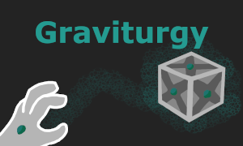
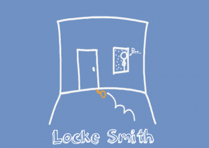
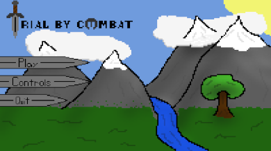
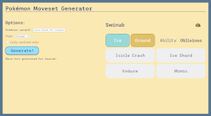
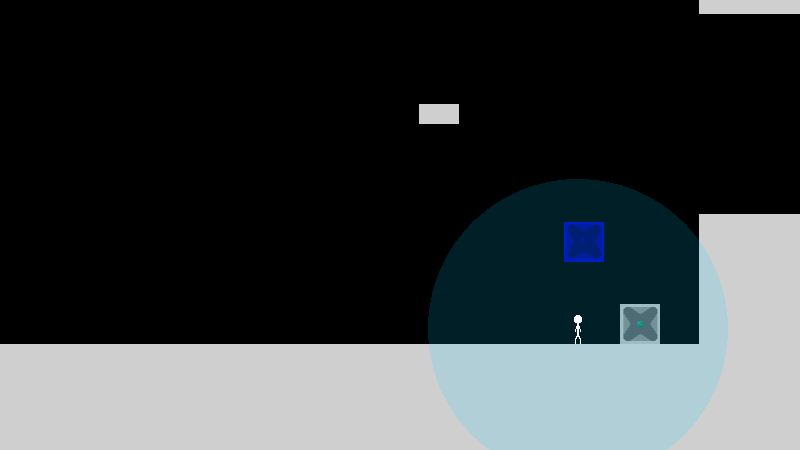
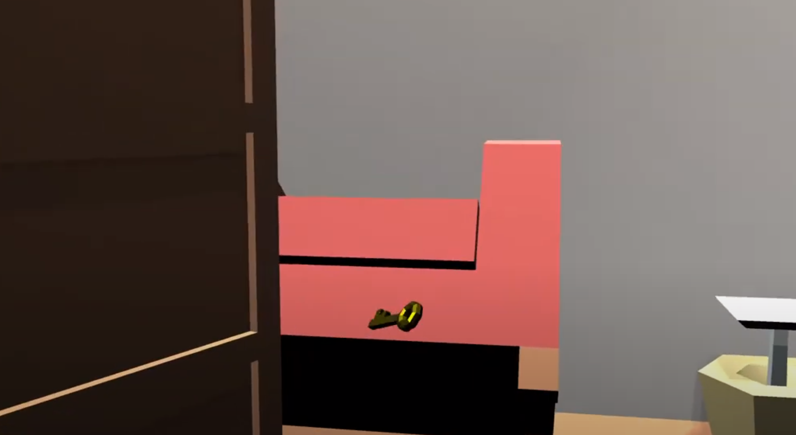
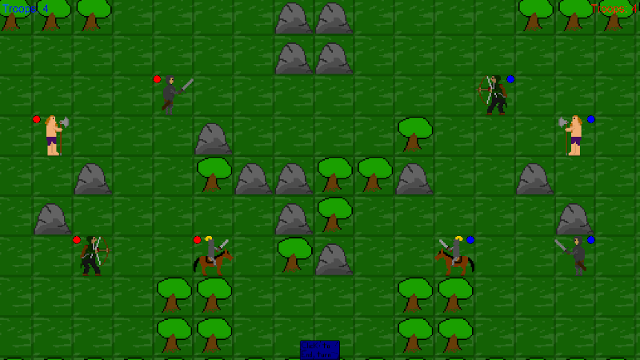
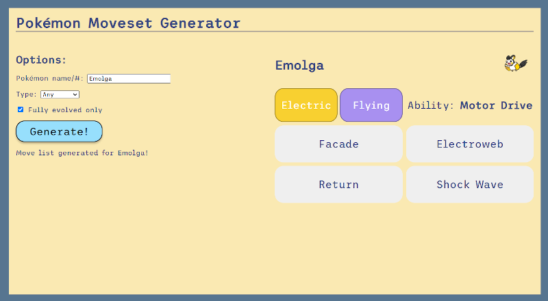

About me
I am computer programmer, software engineer, graphic designer, and game designer/developer for digital and physical games. First and foremost, I am a problem solver who loves technology, which naturally led me down the self-taught path to programming.
When presented with a problem, I try to find the cleanest and most efficient answer. If it turns out that my solution isn't as smooth as I want, I like to keep trying new things until something sticks, and learn from all the mistakes and failed projects along the way. Although this leaves behind a sad graveyard of "could have been" projects, it makes the ones that survive shine that much more.
Resume
Projects
Graviturgy

Graviturgy is a puzzle platformer where you can use the force! I made it entirely in JavaScript utilizing PIXIjs and Howler. This is the first fully completed solo game project I've made, and it's the project I'm most proud of. Give it a go!
(Read more)
(Try it out!)
Locke Smith

Locke Smith is a physics-based 3d platformer where you control a key jumping through a messy house, trying to reach the front door to unlock it. Created in Unity with a team of four during the 2021 Global Game Jam, I programmed the player controls, fixed major issues with the camera, designed one of the rooms, and debugged code throughout the project.
(Read more)
(Try it out!)
(Global Game Jam Page)
(Repository)
Trial by Combat

Trial by Combat is a local 2-player 2D tactics game developed using C# and Monogame. In this group project, I created the map loading logic as well as the external tool used to draw, save, and edit the maps for the game. Additionally, I was the production manager, organizing meetings, timelines, and goals. In meetings and while working remotely, I often ended up acting as the group leader, coordinating our efforts and ensuring everyone had something productive to work on.
(Read more)
Pokémon Moveset Generator

The Pokémon Moveset Generator is a website that uses JavaScript and the PokéAPI to search for a pokémon and give it a random assortment of attacks and abilities. As someone who enjoys competitive Pokémon, I thought it would be fun to come up with a way to spice up my games every now and again, and having played around with my own website I can confirm it's a blast!
(Read more)
(Try it out!)
Graviturgy
Graviturgy is a puzzle platformer where you can use the force! I made it entirely in JavaScript utilizing PIXIjs and Howler. This is the first fully completed solo game project I've made (even if I do plan on updating it in the future), and it's the project I'm most proud of.
The foremost goal of this project was to create a functional, believable, and fun physics system based on what I have learned over the years. Because of this, the very first thing I did was manually add in basic tools such as vectors, rectangles, collision detection, and kinematic objects with masses that can have forces applied to them. Making these physics (and the player controls) feel tight and smooth took a lot of testing, but after reconsidering various approaches I finally got the game to feel right. After that I focused on designing interesting puzzles that made the most out of what I found fun during physics testing: getting to high places, and throwing things across the room.
Locke Smith
Locke Smith is a physics-based 3d platformer where you control a key jumping through a messy house, trying to reach the front door to unlock it. Created in Unity with a team of four during the 2021 Global Game Jam, I programmed the player controls, fixed major issues with the camera, designed one of the rooms, and debugged code throughout the project.
Having been my first ever Game Jam, my personal goal for the project was to just finish something playable by the end of the strict time limit. However, as the project progressed, our team realized we were managing to make something good, something we genuinely enjoyed playing and testing. The simplicity of the concept allowed us to make a much more refined and engaging experience than we would have otherwise been able to do. Additionally, my ability to perform well under a harsh time constraint proved to myself that I can work under pressure and with tight deadlines. As an example, I wrote code for triggers that could activate other objects around the room, but we decided to cut the feature from the level design itself due to time constraints. Often, the hardest part of a project is letting go of things that you put hard work into, but in cases like these sometimes a feature has to be cut and the best thing to do is simply move on.
Trial by Combat
Trial by Combat is a local 2-player 2D tactics game developed using C# and Monogame. In this group project, I created the map loading logic as well as the external tool used to draw, save, and edit the maps for the game. Additionally, I was the production manager, organizing meetings, timelines, and goals. In meetings and while working remotely, I often ended up acting as the group leader, coordinating our efforts and ensuring everyone had something productive to work on.
Not only did I learn more about file I/O, but I also got great practice with making external tools to help streamline game development. Getting one program to export a file in a way that is readable and easy to disect in another program was challenging, but by making sure the structure of the output and the input was clear and defined I was able to make the whole process much easier than it could have been.
Pokémon Moveset Generator
The Pokémon Moveset Generator is a website that uses JavaScript and the PokéAPI to search for a pokémon and give it a random assortment of attacks and abilities. As someone who enjoys competitive Pokémon, I thought it would be fun to come up with a way to spice up my games every now and again, and having played around with my own website I can confirm it's a blast!
This project was my first deep-dive into utilizing a webAPI, so while working on it my primary goal was to learn how to smoothly pull data from a greater database and implement it cleanly into my own website. Since in the past I've usually been able to alter any given part of the code I'm working on, adjusting to be able to handle a predetermined, rigid source of data was difficult and added extra complexity to my JavaScript. For example, the PokéAPI has info on pokémon species and individual pokémon (such as various forms of the same species). Figuring out how to translate between these two data types was difficult, but by studying the API and how it is structured I managed to get my website to work how I wanted it to.